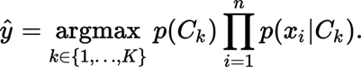
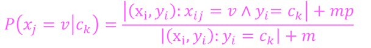
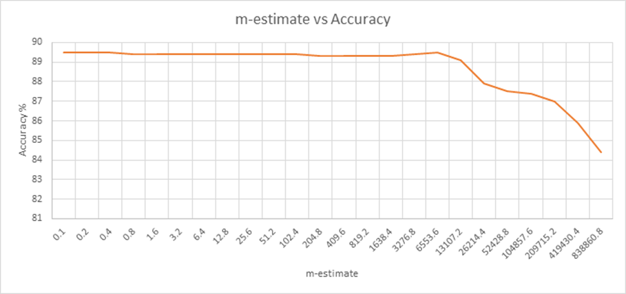

Naïve Bayes Classifier
-Devendra Pratap Yadav
Implementing
Naïve Bayes Classifier in Python.
We use the formula for finding the most probable class ‘y’ :

Where
k=number of classes
p(Ck) = prior probability of class
p(xi | Ck) = likelihood of word xi
belonging to class Ck
Prior Probabilities of Data
For class Ci, prior probability P(Ci) = Number of Emails with class Ci / Total Number of Emails
Total training Emails = 5000
Spam Emails : 2402, Ham Emails : 2598
P(spam)= 0.4804 P(Ham)= 0.5196
Hence, the prior probabilities are similar with slightly more number of Ham emails in training data.
Total Vocabulary and most frequent words.
Training with 5000 emails
Ham : Vocabulary : 996.0
Total number of occurrences of all words in Ham : 1158206.0
Spam : Vocabulary : 969.0
Total number of occurrences of all words in Spam : 792238.0
The most frequent words with their frequency are given below:
Five most frequent words in Ham e-mail :
1. ('aaaaaaaaaaaaaaaaaaaaaaaaaaaaaaaaaaaaaaaaaaaaaaaaaaaaaaaaaaaaaaaaaaaaaaaaaaaa', 64869)
2. ('enron', 47139)
3. ('the', 42690)
4. ('to', 30742)
5. ('a', 21850)
Five most frequent words in Spam e-mail :
1. ('enron', 29125)
2. ('a', 19289)
3. ('the', 18046)
4. ('corp', 16577)
5. ('to', 15256)
Precision Loss for small probability values and Solution
According to MAP class formula,
Since the probabilities p(xi | Ck) are <1, multiplication of large number of such values results in underflow and loss of data since the value of posterior probability becomes close to zero.
To overcome this, we take the logarithm on both sides of the formula for Posterior probability.
Log ( P(Ck | x1,x2,x3…xn) ) = Log ( P(Ck)* )
= Log( P(Ck) ) +
Where xi is a word in the email.
Since log is an increasing function and probability values are in range [0,1] ,
if a>b then
log a > log b.
Now,
instead of multiplying small values, we add the log of those values.
Hence, we obtain values for both P( Ham | email) and P( Spam | email).
These
values will be negative since individual words have probability <=1. So,
log(a) <=0 for a<=1
We compare both values and set the class as one having maximum probability.
Results
Testing data Email classes distribution = Ham : 420, Spam : 580
Effect of varying m-estimate on accuracy
The likelihood probability by using m-estimate :

where m= equivalent sample size
p = prior estimate of probability for word xi = 1/
|Vocabulary|

We observe that for small values of m-estimate, the accuracy remains consistent at ~89.5%. The vocabulary for both Ham and Spam is ~1000. When we get close to small multiples of 1000, the accuracy starts to drop. It drops to 84% for m-estimate = 838860 which is close to the “Total occurrences of all words” in emails.
For very large values of m-estimate, the denominator i.e. “Total count of words in email” in the likelihood probability formula becomes large and the probability becomes very small. The effect on word frequency in likelihood estimation decreases. Hence, we notice a decrease in accuracy for very large values of m-estimate.
In effect, the m-estimate adds a value equal to ‘m*p’ to the frequency of all words in the email. If m is small, there is negligible effect on probabilities of words, only those with 0 probability get a very small value.
Hence,
if we are using small values of m, we assume that the average frequency of
words in email is small. We use a small value so as to prevent frequency values
from becoming much larger than original and producing incorrect probabilities. The
job of m-estimate is to prevent 0 likelihood probability values. It must not
skew the frequency values and result in a distribution very different from the
original.
Beating the classifier and possible weaknesses
Our classifier classifies the email based on the words present in the email. An
email is classified as spam if it has a large fraction of words which are “spam
words”. To decrease the probability of it being spam, we can add a large number
of “Ham words” i.e. words that frequently occur in Ham emails. Hence, the Ham
words will nullify the penalties caused by Spam words and the classifier will
produce incorrect classification.
Since the classifier relies on text data i.e. words in the email, we can
replace our spam message with images that contain text. This will make it
difficult for spam classifier to extract words. The classifier must use Optical
Character Recognition to extract text which will slow the process
significantly.
We can also intelligently format our spam email in the same way as a ham email,
avoiding use of ALL CAPITAL words in our email, using correct spellings and
avoiding non-ASCII characters. We can also disguise the most frequent Spam
words using incorrect spelling. Example : spell “Vacation” as “Vacat!on”. This
new spelling is highly unlikely to be present in spam classifier’s vocabulary.
Overall, the Naïve Bayes Classifier performs very well for spam classification.
It is fast and has a relatively high accuracy for such text classification
tasks.